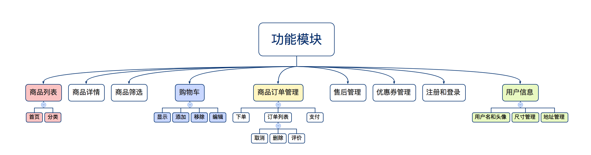
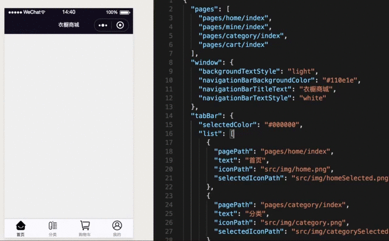
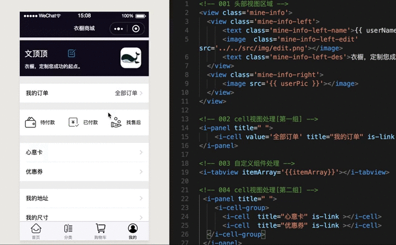
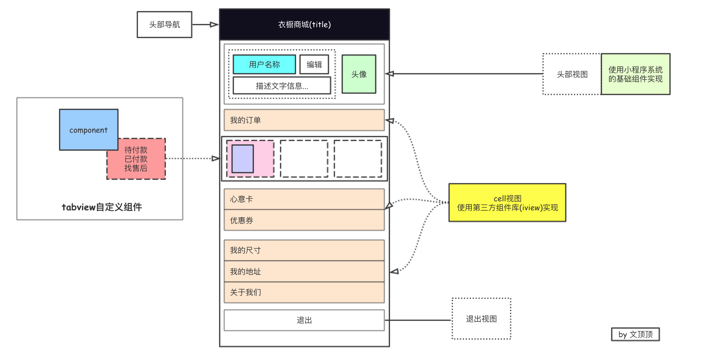

因为需要完整的综合项目来贯穿小程序开发中的基础知识，所以我在自己使用的小程序清单中选择了一款优秀小程序(MatchU码尚)来进行实现和学习，项目中用到的数据和图片等资源有部分来源于此，该项目仅做技术演示和个人学习使用。本文先对该综合项目、开发小程序项目前期的准备工作进行说明，然后从零开始构建"衣橱定制商城小程序"，并完成tabbar栏和我的页面视图搭建。
说明 这是篇说明性博文，不会过多涉及项目的具体代码，该系列文章的源码您可以点击此处下载。
1.0 开发前准备
[1] 官网注册微信小程序开发者账号。
[2] 官网注册并完善小程序基本信息后，下载微信开发者工具并安装。
[3] 在电脑合适的位置新建空的项目目录，在设置-开发设置中获取APPID初始化项目。
2.0 项目的功能模块

3.0 项目的初始化
在使用微信开发者工具选择项目目录，输入appID（也可以使用测试的appID）后勾选建立普通快速模板，那么我们将得到一个最简单的项目，该项目的整体结构如下：
1
2
3
4
5
6
7
8
9
10
11
12
13
14
15
16
17
| .
├── app.js
├── app.json
├── app.wxss
├── pages
│ ├── index
│ │ ├── index.js
│ │ ├── index.wxml
│ │ └── index.wxss
│ └── logs
│ ├── logs.js
│ ├── logs.json
│ ├── logs.wxml
│ └── logs.wxss
├── project.config.json
└── utils
└── util.js
|
对默认的项目结构进行调整。具体调整内容为:
001 删除默认的两个页面 index 和 logs文件夹。
002 在pages文件夹中新建home、cart、mine和category文件夹并创建对应的pages页面(命名为index)。
003 在项目根目录下面新建src目录，该目录用于存放项目中需要用到的资源，并调整app.json文件的配置项。
004 在src目录下新建img目录用于存储项目中需要用到的图片资源，新建lib目录用于存放需要用到的第三方库和组件。
调整后的项目文件结构如下：
1
2
3
4
5
6
7
8
9
10
11
12
13
14
15
16
17
18
19
20
21
22
23
24
25
26
27
28
29
30
31
32
33
| .
├── app.js
├── app.json
├── app.wxss
├── pages
│ ├── cart
│ │ ├── index.js
│ │ ├── index.json
│ │ ├── index.wxml
│ │ └── index.wxss
│ ├── category
│ │ ├── index.js
│ │ ├── index.json
│ │ ├── index.wxml
│ │ └── index.wxss
│ ├── home
│ │ ├── index.js
│ │ ├── index.json
│ │ ├── index.wxml
│ │ └── index.wxss
│ └── mine
│ ├── index.js
│ ├── index.json
│ ├── index.wxml
│ └── index.wxss
├── project.config.json
├── src
│ ├── img
│ └── lib
└── utils
└── util.js
9 directories, 31 files
|
4.0 项目tabbar实现
[1] 准备好项目tabbar部分需要的图标，存放到src/img目录下，这些图标可以在iconfont网站获取。
[2] 对app.json文件的字段进行配置，主要设置项目的导航背景、标题文字以及设置tabBar选项信息。
1
2
3
4
5
6
7
8
9
10
11
12
13
14
15
16
17
18
19
20
21
22
23
24
25
|
{
"pages": [
"pages/home/index",
...省略
],
"window": {
"backgroundTextStyle": "light",
"navigationBarBackgroundColor": "#110e1e",
"navigationBarTitleText": "衣橱商城",
"navigationBarTextStyle": "white"
},
"tabBar": {
"selectedColor": "#000000",
"list": [
{
"pagePath": "pages/home/index",
"text": "首页",
"iconPath": "src/img/home.png",
"selectedIconPath": "src/img/homeSelected.png"
}
....省略
]
}
}
|

5.0 我的页面视图实现
在项目的整体结构和tabbar选项卡配置好之后，先尝试实现我的页面视图。
先给出我的页面的整体界面实现效果。

因为该页面的布局相对来说比较简单，而且要处理的数据也相对较少，这里在页面中需要用到数据的地方我们先暂时使用假数据来代替，稍微后面一点的时候再进行具体的优化。通过观察上面的实现效果，我们可以把我的页面分解成几个组成部分，每个部分则采用不同的策略来进行实现。
❏ 头部视图
采用小程序中的基础组件text、image、view等并设置样式来实现。
❏ cell视图(多组)
采用第三方组件库来实现，这里使用到的是iview中的cell和panel以及cell-group组件。
[步骤] 把第三方库下载并导入到项目中(src/lib/iview) → 在json文件中配置usingComponents → 在wxml中使用组件并设置属性。
❏ 待付款、已付款区域视图
因为该视图在首页中也有用到，所以这里考虑把这一块的视图封装成自定义组件来处理。
[步骤] 自定义组件(src/lib/tabview) → 在json文件中配置 -> 在wxml中使用自定义组件。

附录01: tabview自定义组件内部实现细节
1
2
3
4
5
6
7
8
9
10
11
12
13
14
15
16
17
18
19
20
21
22
23
24
25
26
27
28
29
30
31
32
33
34
35
36
37
38
39
40
41
42
43
44
45
46
47
48
49
50
51
52
53
54
55
56
57
58
59
60
61
62
| 001 自定义组件的基本操作
(1) 在项目的src/lib目录下新建tabview文件夹。
(2) 在tabview目录下新建component文件并命名为tabview。
(3) 新建component的时候会默认生成js\wxml\json\wxss四个文件，其中json文件中已配置component为true.
(4) 在wxml文件中编辑内容。
(5) 在wxss文件中设置样式。
(6) 在js文件中设置初始数据和事件方法。
002 wxml文件中的内容
<view class='content-view'>
<view class='content-view-cell' wx:for='{{itemArray}}'>
<image class='content-view-cell-img' src='{{item.srcImg}}'></image>
<text class='content-view-cell-des'>{{item.des}}</text>
</view>
</view>
003 wxss文件中的内容
.content-view
{
width: 100%;
height: 150rpx;
background: #fff;
margin-top: 40rpx;
display: flex;
}
.content-view-cell
{
height: 150rpx;
line-height: 150rpx;
flex-grow: 1;
position: relative;
}
.content-view-cell-img
{
width: 70rpx;
height: 70rpx;
position: absolute;
left: 30rpx;
top: 40rpx;
}
.content-view-cell-des
{
position: absolute;
left: 120rpx;
font-size: 30rpx;
line-height: 150rpx;
height: 150rpx;
}
004 js文件中内容
Component({
//设置自定义组件的属性列表
properties: {
itemArray:{
type:Array
}
}
})
|
附录02: mine页面wxml文件内容
1
2
3
4
5
6
7
8
9
10
11
12
13
14
15
16
17
18
19
20
21
22
23
24
25
26
27
28
29
30
31
32
33
34
35
36
37
38
39
40
|
<view class='mine-info'>
<view class='mine-info-left'>
<text class='mine-info-left-name'>{{ userName }}</text>
<image class='mine-info-left-edit' src='../../src/img/edit.png'></image>
<text class='mine-info-left-des'>衣橱，定制您成功的起点。</text>
</view>
<view class='mine-info-right'>
<image src='{{ userPic }}'></image>
</view>
</view>
<i-panel title=" ">
<i-cell value='全部订单' title="我的订单" is-link ></i-cell>
</i-panel>
<i-tabview itemArray='{{itemArray}}'></i-tabview>
<i-panel title=" ">
<i-cell-group>
<i-cell title="心意卡" is-link ></i-cell>
<i-cell title="优惠券" is-link ></i-cell>
</i-cell-group>
</i-panel>
<i-panel title=" ">
<i-cell-group>
<i-cell title="我的地址" is-link ></i-cell>
<i-cell title="我的尺寸" is-link ></i-cell>
<i-cell title="关于我们" is-link ></i-cell>
</i-cell-group>
</i-panel>
<view class='mine-logout'>退出</view>
|